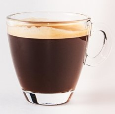
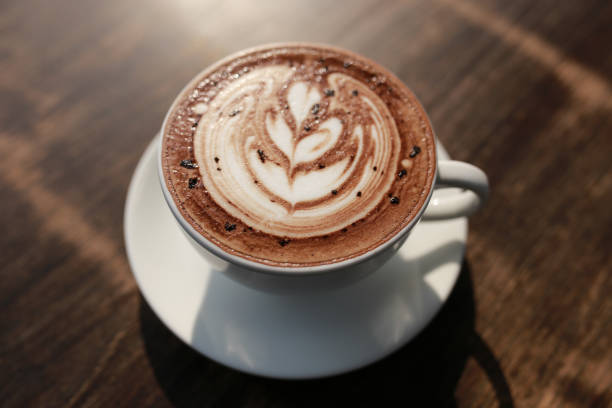
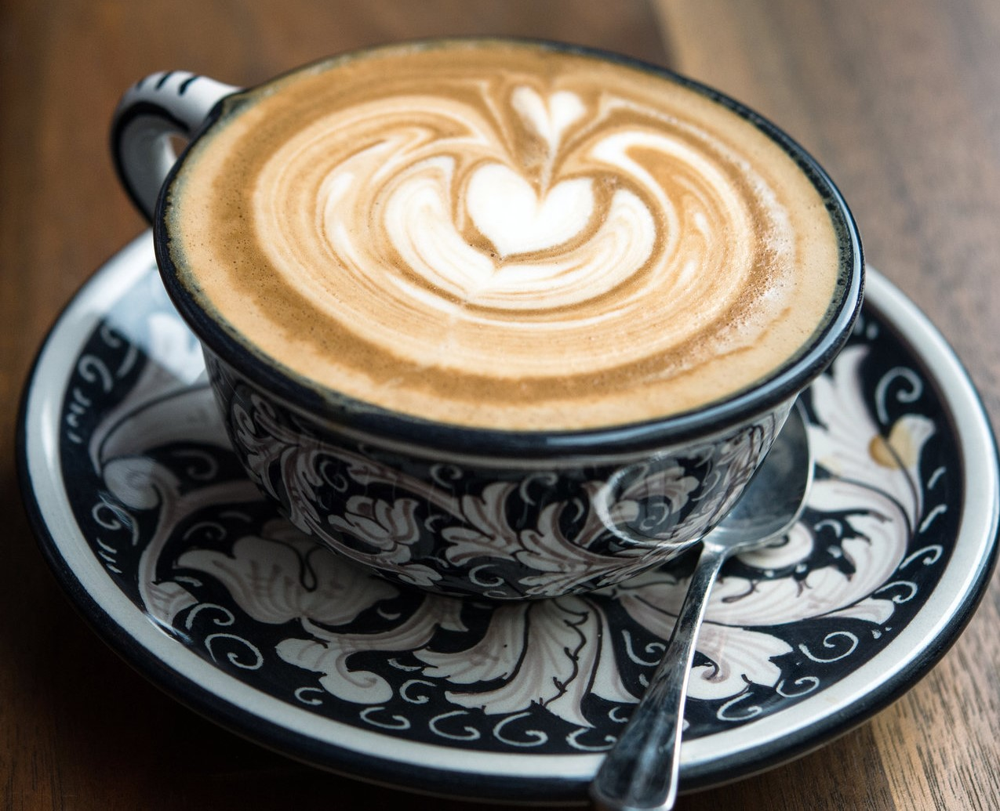
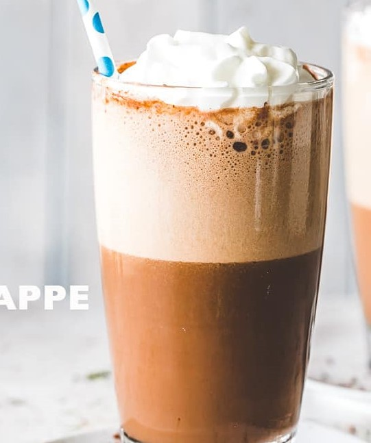

Name


Name |
How is it made? | How it Looks? |
|---|---|---|
| Americano | Espresso with added hot water |  |
| Latte | A tall, mild 'milk coffee'.An espresso with steamed milk and only a little milk foam poured over it. | |
| Mocha | A caffè latte with chocolate and whipped cream, made by pouring about 2 cl of chocolate sauce into the glass, followed by an espresso shot and steamed milk. |  |
| Au Lait | French morning coffee. Made by mixing dark roasted filter coffee (often prepared with French Press) and warm milk. | |
| Cappuccino | coffee drink consisting of espresso and a milk foam mixture |  |
| Frappe | Rich iced coffee made of espresso, milk and ice. Flavoured syrup can be added (about 300 ml). Mixed in a blender |  |